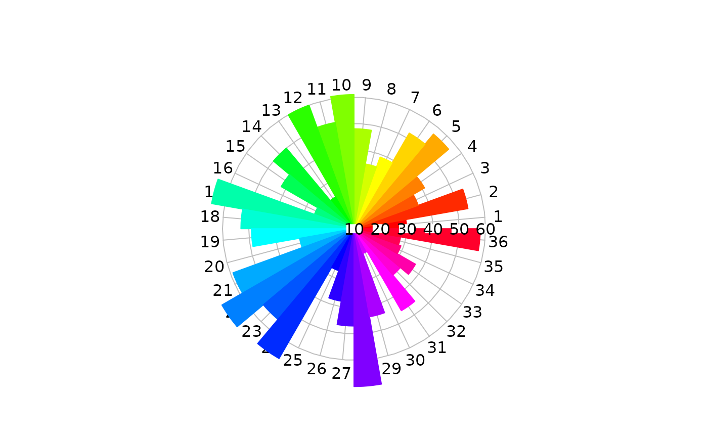
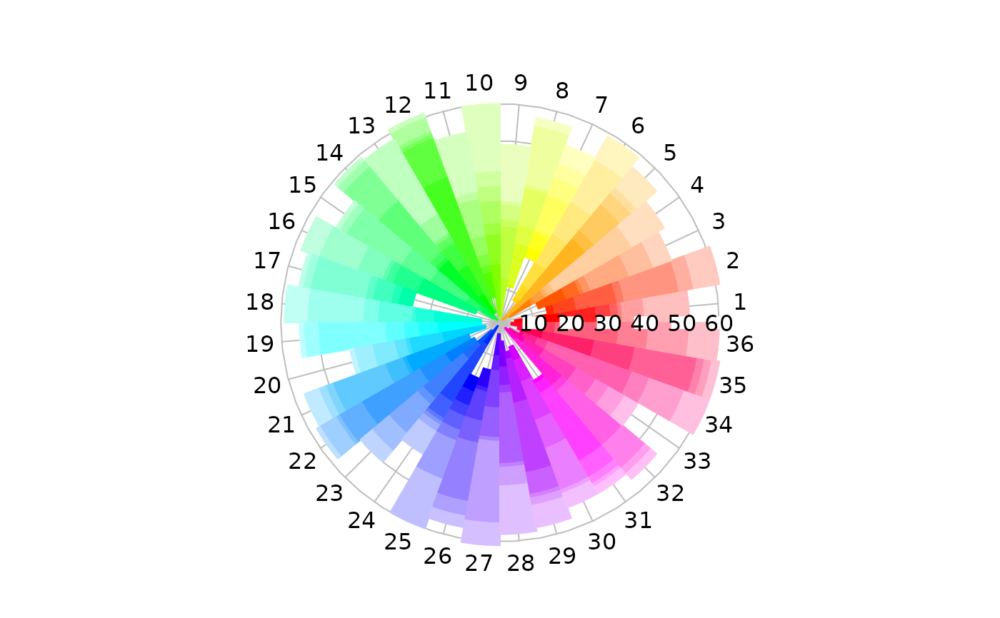
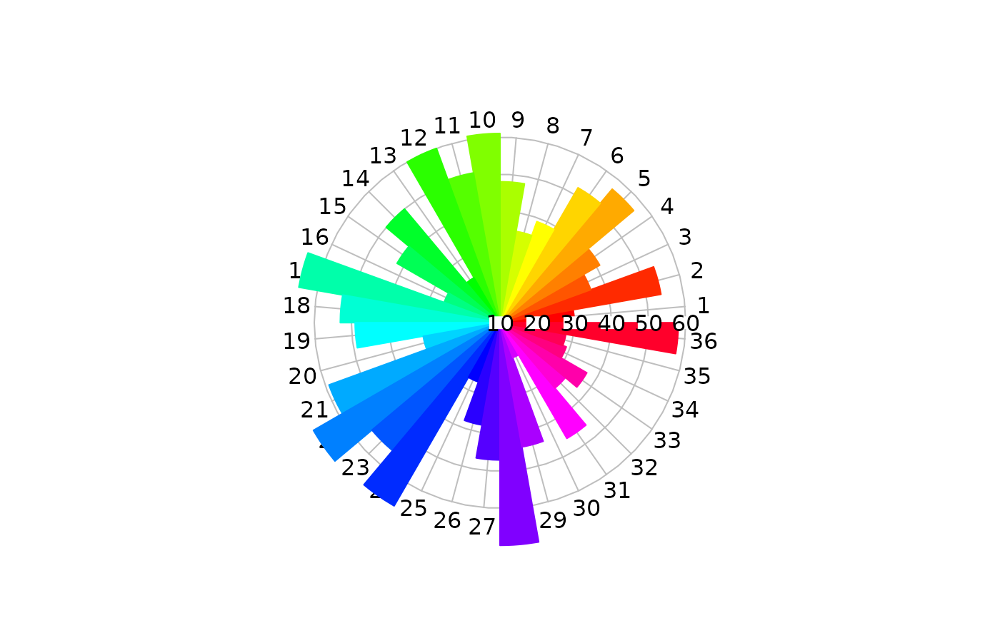
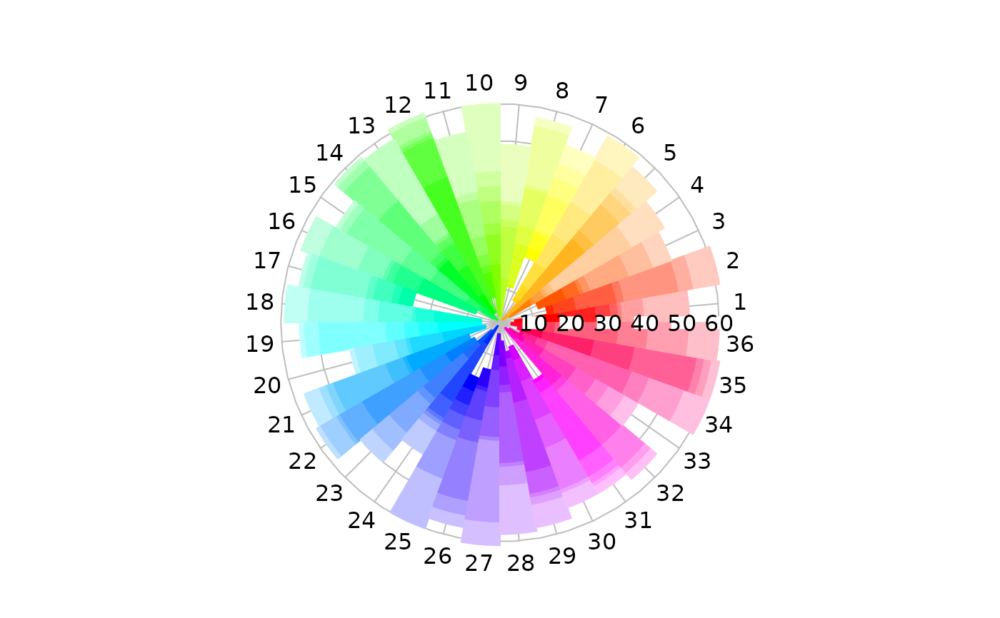

Plot sectors/annuli on a circular grid of 0 to 2*pi radians
radial.pie.RdPlot numeric values as sectors with optional annuli on a circular field in the directions defined by angles in radians.
Usage
radial.pie(radial.extents,sector.edges=NULL,
sector.colors=NULL,cs1=c(0,1),cs2=c(0,1),cs3=c(0,1),
alpha=1,labels=NA,label.pos=NULL,radlab=FALSE,start=0,
clockwise=FALSE,label.prop=1.1,radial.lim=NULL,main="",xlab="",ylab="",
mar=c(2,2,3,2),show.grid=TRUE,show.grid.labels=4,show.radial.grid=TRUE,
grid.col="gray",grid.bg="transparent",grid.unit=NULL,
radial.labels=NULL,boxed.radial=TRUE,add=FALSE,...)Arguments
- radial.extents
A numeric data vector or list. If radial.extents is a list, the elements of the list will be considered separate data vectors.
- sector.edges
A numeric vector of positions in radians. These are interpreted as beginning at the right (0 radians) and moving counterclockwise unless clockwise is TRUE.
- sector.colors
Optional colors for the sectors and annuli. Defaults to rainbow(nsectors) with fading outward if annuli are specified.
- cs1, cs2, cs3, alpha
Color scaling arguments - see color.scale.
- labels
Character strings to be placed at the outer ends of the lines. If set to NA, will suppress printing of labels, but if missing, the radial positions will be used.
- label.pos
The positions of the labels around the plot in radians.
- radlab
Whether to rotate the outer labels to a radial orientation.
- start
Where to place the starting (zero) point. Defaults to the 3 o'clock position.
- clockwise
Whether to interpret positive positions as clockwise from the starting point. The default is counterclockwise.
- label.prop
The label position radius as a proportion of the maximum line length.
- radial.lim
The inner and outer radial limits for the plot. Defaults to the range of radial.extents, although zero to max(radial.extents) is often what is wanted.
- main
The title for the plot.
- xlab,ylab
Normally x and y axis labels are suppressed.
- mar
Margins for the plot. Allows the user to leave space for legends, long labels, etc.
- show.grid
Logical - whether to draw a circular grid.
- show.grid.labels
Whether and where to display labels for the grid - see Details.
- show.radial.grid
Whether to draw radial lines to the plot labels.
- grid.col
Color of the circular grid.
- grid.bg
Fill color of above.
- grid.unit
Optional unit description for the grid.
- radial.labels
Optional labels for the radial grid. The default is the values of radial.lim.
- boxed.radial
Whether to use boxed.labels or text for radial labels.
- add
Whether to add one or more series to an existing plot.
- ...
Additional arguments are passed to plot.
Value
The par values that are changed in the function as they were at the time radial.pie was called.
Details
radial.pie displays a plot of radial sectors with optional annular sections centered at the midpoint of the plot frame, the lengths corresponding to the numeric magnitudes of radial.extents.
If more series are added to an existing plot, radial.pie will try to maintain the current plot parameters. However, it seems unlikely that adding series would be sensible in radial.pie. This argument may be dropped if it proves useless.
The size of the labels on the outside of the plot can be adjusted by setting par(cex.axis=) and that of the labels inside by setting par(cex.lab=). If radlab is TRUE, the labels will be rotated to a radial alignment. This may help when there are many values and labels. If some labels are still crowded, try running label.pos through the spreadout function. If the show.grid.labels argument is a number from 1 to 4, the labels will be placed along a horizontal or vertical radius. The numbers represent the same positions as in axis, with the default (4) on the right. To suppress these labels, pass zero or FALSE.
radial.pie works somewhat differently from the radial.plot family and is still under development. I have released it in order to get feedback to improve both the design and the programming. If successful, I hope to merge the code with the radial.plot function.
Examples
pie1<-c(3,6,5,4,7,8,9,1,4)
pie2<-list(0:3,1:6,2:5,1:4,0:7,4:8,2:9,0:1,0:4)
pie3<-sample(10:60,36)
pie4<-list(sort(sample(1:60,8)))
for(sector in 2:36) pie4[[sector]]<-sort(sample(1:60,8))
oldpar<-radial.pie(pie1,labels=LETTERS[1:9])
 radial.pie(pie2,labels=letters[2:10])
radial.pie(pie2,labels=letters[2:10])
 radial.pie(pie3,labels=1:36)

radial.pie(pie4,labels=1:36)

# restore the par values
par(oldpar)
radial.pie(pie3,labels=1:36)

radial.pie(pie4,labels=1:36)

# restore the par values
par(oldpar)